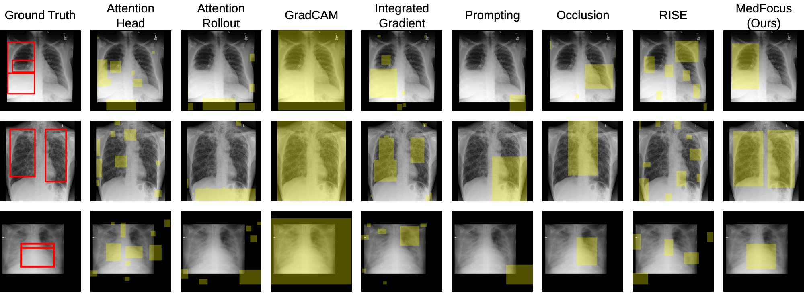
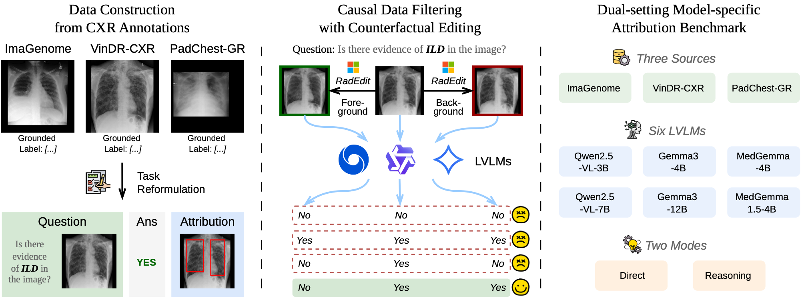
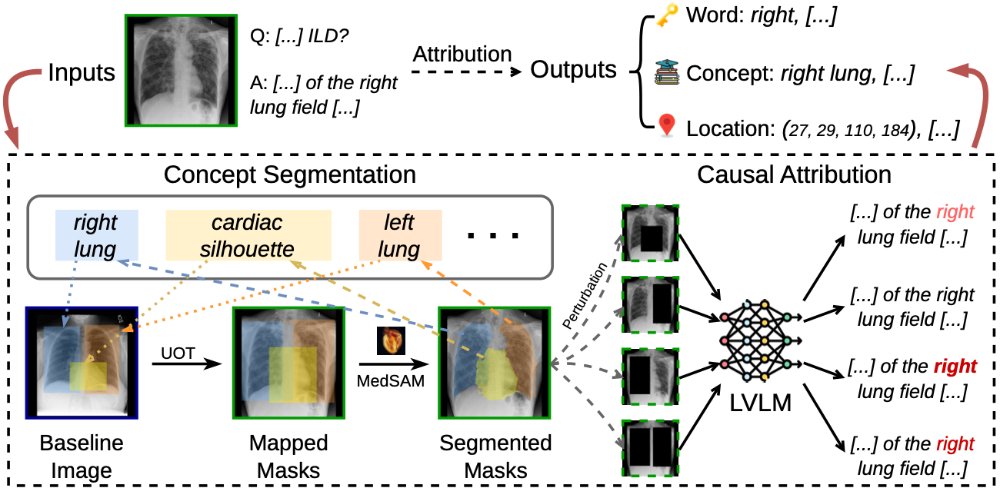
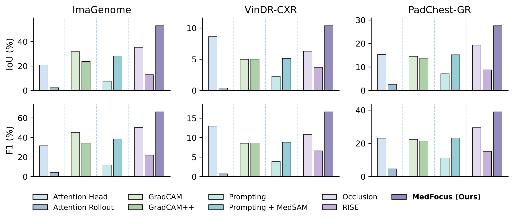
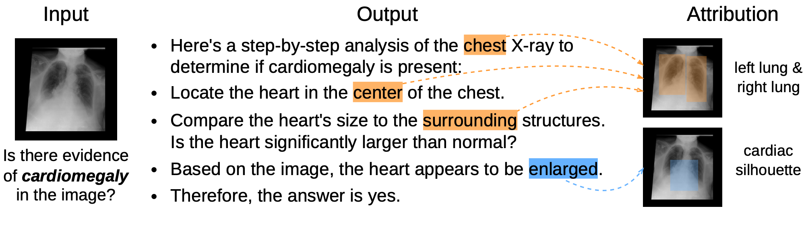
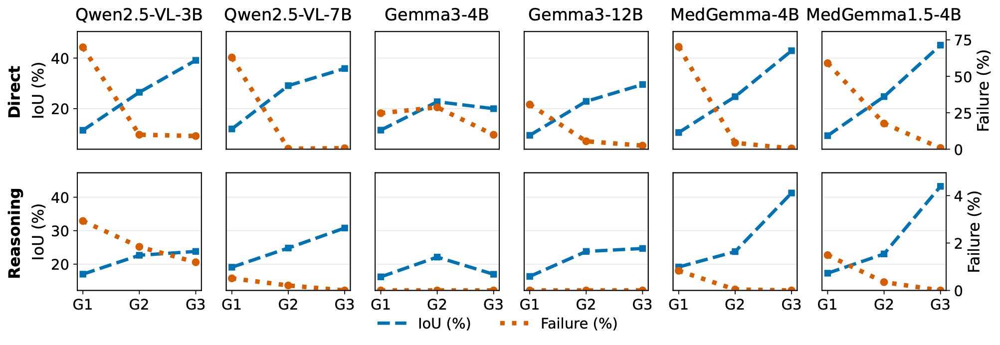

Rethinking Visual Attribution for Chest X-ray Reasoning in Large Vision Language Models

Saliency and attention maps are widely used to explain large vision-language models (LVLMs) in medicine. Whether they reflect the evidence behind a prediction is rarely checked, because that evidence is normally unknown. MedGround-Bench keeps only chest X-ray questions whose expert-annotated region is confirmed, by counterfactual editing, to drive the model's answer. On these samples, widely used attribution methods often miss the evidence. MedFocus instead attributes a prediction to named anatomical regions by intervening on them, and explains it at the spatial, concept, and token level.
- 3,940 causally verified samples across 6 LVLMs, 3 chest X-ray datasets, and two output modes (direct answer and step-by-step reasoning).
- 11 attention-, gradient-, prompting-, and perturbation-based methods often fail to identify the evidence the model used.
- MedFocus reaches 54.3% IoU on ImaGenome versus 39.2% for the best baseline, with the best IoU and F1 on all three datasets.
- It stays faithful under step-by-step reasoning (52.95% IoU on ImaGenome), where many baselines degrade further.
A causal test for attribution faithfulness
A region annotated by an expert is not necessarily the region the model used. MedGround-Bench therefore keeps only samples whose annotated region is verified, through counterfactual editing, to drive the model's prediction.

- Grounded VQA from expert annotationsFindings with expert bounding boxes from ImaGenome, VinDR-CXR, and PadChest-GR become questions of the form “Is there evidence of [finding] in the image?”
- Correctness filteringKeep only the questions the target LVLM answers correctly, since evidence for a wrong answer cannot be reliably established.
- Foreground counterfactualRadEdit removes the finding inside the annotated boxes; the sample is kept only if the model flips its answer.
- Background counterfactualEditing everything outside the boxes must leave the answer unchanged, which rules out models that react to any image modification.
The result is 1,880 direct-answer and 2,060 reasoning samples for six open LVLMs: Qwen2.5-VL-3B/7B, Gemma3-4B/12B, MedGemma-4B, and MedGemma1.5-4B. Attributions are scored against the verified boxes with IoU, F1, precision, and recall.
Concept-based causal attribution
Instead of reading pixels or model internals, MedFocus asks a causal question about clinically named regions: if this piece of anatomy were removed, would the model still produce the same output?

For each concept \(c\), MedFocus masks the concept and measures how much the model's confidence in its original output drops, using a single forward pass:
of concept \(c\)
MedFocus: segment anatomy, then intervene on it
- Map 11 anatomical concepts (lungs, cardiac silhouette, mediastinum, …) from a reference normal CXR to the target image with unbalanced optimal transport.
- Unbalanced transport tolerates pathology-driven changes in tissue mass.
- Refine each transferred region with MedSAM.
- Zero-mask the bounding box of each concept, and of clinical groups such as both lungs.
- The concept with the largest \(\Delta_c\) explains the prediction: a box, a concept name, and per-token effects for reasoning outputs.
- If no concept matters (\(\min_c e^{-\Delta_c} \ge 0.75\)), fall back to the whole image.
MedFocus finds the evidence others miss
Results on MedGround-Bench-Direct, averaged over the six LVLMs. Saliency maps from the baselines are converted to boxes with a single fixed threshold.
Attribution faithfulness on MedGround-Bench-Direct. All scores in %.
| ImaGenome | ImaGenome | VinDR-CXR | VinDR-CXR | PadChest-GR | PadChest-GR | ||||||||||||||
|---|---|---|---|---|---|---|---|---|---|---|---|---|---|---|---|---|---|---|---|
| Method | IoU | F1 | Prec | Recall | IoU | F1 | Prec | Recall | IoU | F1 | Prec | Recall | |||||||
| Attention-based | Attention-based | ||||||||||||||||||
| Attention Head | 15.87 | 26.10 | 48.17 | 19.12 | 6.93 | 11.80 | 11.09 | 23.53 | 14.33 | 23.30 | 31.42 | 23.53 | |||||||
| Attention Rollout | 2.70 | 5.05 | 12.70 | 3.30 | 0.70 | 1.30 | 1.58 | 1.67 | 2.77 | 5.06 | 9.29 | 4.17 | |||||||
| LRP | 5.67 | 10.15 | 22.61 | 6.84 | 1.93 | 3.42 | 3.39 | 7.34 | 4.12 | 7.18 | 11.79 | 6.89 | |||||||
| Gradient-based | Gradient-based | ||||||||||||||||||
| Gradient-weighted Attention | 39.24 | 54.80 | 39.25 | 99.90 | 7.73 | 13.26 | 7.73 | 100.00 | 22.73 | 34.21 | 22.73 | 100.00 | |||||||
| GradCAM | 34.47 | 49.10 | 44.81 | 80.62 | 8.53 | 14.36 | 11.95 | 68.91 | 20.33 | 31.22 | 26.01 | 78.36 | |||||||
| GradCAM++ | 30.54 | 44.07 | 44.40 | 65.42 | 7.40 | 12.61 | 9.36 | 60.64 | 18.28 | 28.09 | 25.93 | 62.96 | |||||||
| Integrated Gradients | 11.71 | 19.13 | 46.39 | 13.45 | 9.38 | 14.96 | 15.10 | 30.42 | 13.06 | 20.12 | 33.85 | 20.73 | |||||||
| Prompting-based | Prompting-based | ||||||||||||||||||
| Prompting | 8.24 | 12.17 | 15.24 | 17.73 | 2.45 | 4.04 | 3.24 | 12.22 | 7.55 | 11.47 | 13.03 | 18.02 | |||||||
| Prompting + MedSAM | 37.62 | 50.56 | 46.62 | 74.64 | 8.33 | 13.78 | 9.11 | 86.08 | 21.76 | 32.29 | 23.22 | 85.52 | |||||||
| Perturbation-based | Perturbation-based | ||||||||||||||||||
| Occlusion | 22.16 | 33.48 | 60.25 | 36.72 | 13.62 | 21.28 | 22.13 | 43.81 | 20.56 | 31.20 | 44.03 | 40.72 | |||||||
| RISE | 19.17 | 30.84 | 50.35 | 24.18 | 10.14 | 16.69 | 14.21 | 36.69 | 16.80 | 26.89 | 33.76 | 29.45 | |||||||
| MedFocus (Ours) | 54.28 | 67.52 | 64.65 | 80.06 | 14.86 | 23.10 | 16.00 | 79.86 | 33.02 | 45.69 | 41.05 | 73.25 | |||||||
Bold: best; underlined: second best.
- Gradient-weighted attention reaches near-perfect recall but low precision, because its maps cover most of the image.
- GradCAM and Integrated Gradients, standard tools for visual classifiers, perform poorly in the LVLM setting.
- MedFocus achieves the best IoU and F1 on all three datasets while keeping a strong balance between precision and recall.
Tuning baseline thresholds does not close the gap
Tuning each baseline's saliency threshold on held-out PadChest-GR questions mostly trades precision for recall. MedFocus, which needs no threshold, stays well ahead.
Fixed vs. tuned saliency thresholds. MedGround-Bench-Direct, averaged over all datasets and models.
| Method | Threshold | IoU | F1 | Prec | Recall |
|---|---|---|---|---|---|
| Attention Head | Fixed | 14.01 | 22.98 | 35.32 | 22.56 |
| Tuned | 25.29 | 37.55 | 30.77 | 70.18 | |
| Integrated Gradients | Fixed | 13.24 | 20.69 | 37.14 | 21.62 |
| Tuned | 26.40 | 38.47 | 34.54 | 75.53 | |
| Occlusion | Fixed | 20.41 | 30.96 | 44.90 | 41.42 |
| Tuned | 25.84 | 37.92 | 37.57 | 67.12 | |
| MedFocus (Ours) | no threshold | 37.93 | 49.82 | 45.37 | 77.68 |
Step-by-step reasoning
When models reason step by step, many baselines degrade further (e.g., GradCAM++ drops from 30.54% to 23.70% IoU on ImaGenome). MedFocus stays strong (52.95% IoU on ImaGenome) because it never needs to probe model internals.

What MedFocus reveals
Token-level attribution of reasoning
MedFocus tracks which anatomy supports each part of a rationale. Early, generic tokens draw on lung-level context, while the clinically specific word “enlarged” concentrates on the cardiac silhouette, consistent with the final diagnosis of cardiomegaly.

Grounding across models and sample groups
We compare samples removed by correctness filtering (G1), correct but ungrounded samples removed by causal filtering (G2), and samples retained in MedGround-Bench (G3).
- IoU rises and the failure rate (no anatomical concept is used) falls from G1 to G3, so the filters keep predictions that are cleanly tied to clinical evidence.
- Step-by-step reasoning lowers the failure rate for every model, often to near zero on G3.
- The medically trained MedGemma models ground their predictions best, and larger models within a family ground better when reasoning.

Ablations
UOT localization with MedSAM refinement outperforms end-to-end segmenters (SAM3, MedSAM3, RadZero) and Grounding DINO, and bounding-box zero masking gives a stronger causal signal than pixel-level masks or RadEdit inpainting.
Ablations of MedFocus design choices.
| Variant | IoU | F1 | Prec | Recall |
|---|---|---|---|---|
| Segmentation paradigm | ||||
| SAM3 (end-to-end) | 30.89 | 42.61 | 38.75 | 79.11 |
| MedSAM3 (end-to-end) | 33.52 | 45.02 | 53.19 | 64.04 |
| RadZero (end-to-end) | 6.95 | 12.13 | 59.68 | 9.29 |
| UOT + MedSAM (detect+seg) (MedFocus) | 37.93 | 49.82 | 45.37 | 77.68 |
| Localization strategy | ||||
| Grounding DINO | 27.72 | 39.63 | 27.74 | 99.77 |
| Grounding DINO + MedSAM | 29.96 | 41.82 | 30.09 | 99.25 |
| UOT | 36.24 | 48.16 | 45.72 | 71.09 |
| UOT + MedSAM (MedFocus) | 37.93 | 49.82 | 45.37 | 77.68 |
| Counterfactual intervention | ||||
| Segmentation mask + RadEdit | 32.66 | 44.40 | 45.15 | 65.00 |
| Segmentation mask + Zero masking | 33.76 | 45.28 | 43.60 | 69.70 |
| Bounding box + RadEdit | 32.27 | 43.87 | 44.54 | 64.78 |
| Bounding box + Zero masking (MedFocus) | 37.93 | 49.82 | 45.37 | 77.68 |
BibTeX
@inproceedings{xiong2026rethinking,
title = {Rethinking Visual Attribution for Chest X-ray Reasoning in Large Vision Language Models},
author = {Guangzhi Xiong and Qiao Jin and Sanchit Sinha and Zhiyong Lu and Aidong Zhang},
booktitle = {Advances in Neural Information Processing Systems (NeurIPS)},
year = {2026}
}